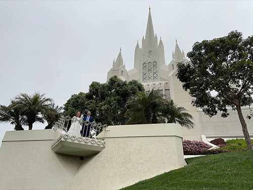

San Diego California Temple
San California Temple
Temple with a Flower in the Foreground
San Diego Temple View from a Distance
Top View of San Diego Temple
San Diego Temple at Night

Exterior View of San Diego Temple
San Diego Temple Outside the Gate
Side View of San Diego Temple
San Diego Temple at Sunset